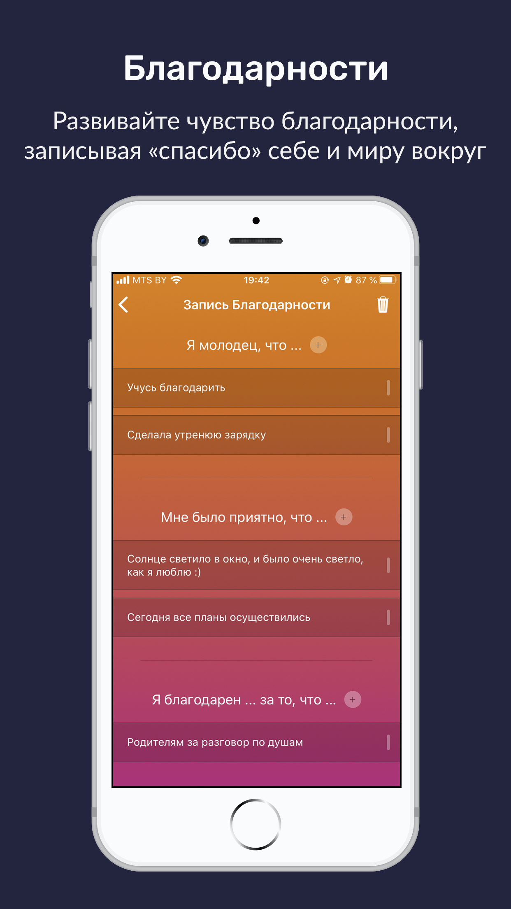
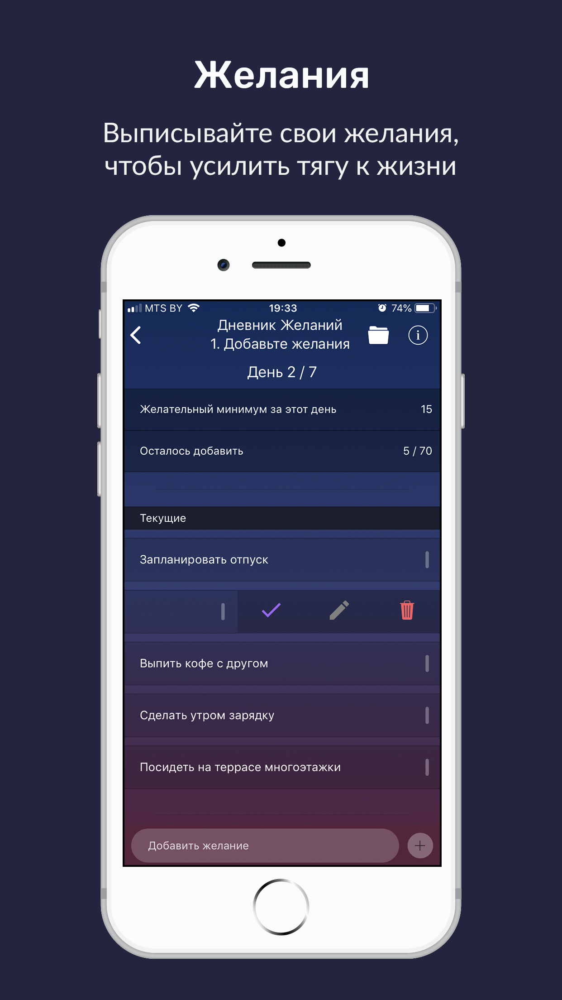
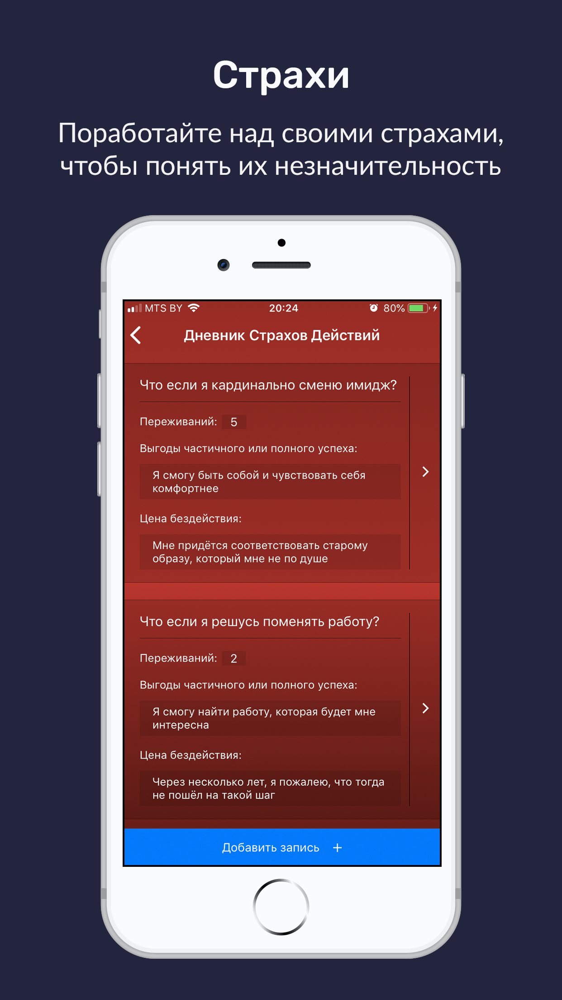
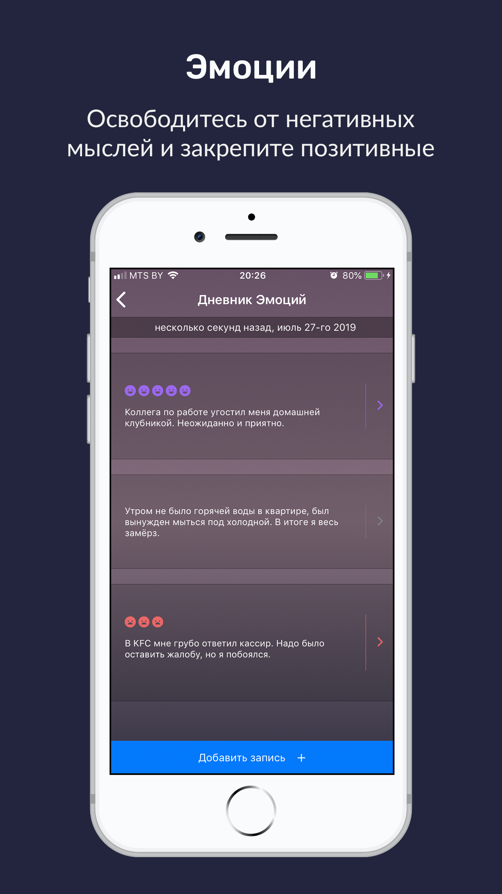

На данный момент приложение содержит 4 дневника
- Дневник Желаний поможет вам найти больше радости в каждом дне
- C Дневником Страхов Действий вы осознаете незначительность ваших страхов перед переменами
- Дневник Эмоций поможет вам избавиться от негативных мыслей и закрепить позитивные моменты из жизни
- Используя Дневник Благодарности вы будете находить по настоящему приятные вещи в своей жизни
Каждый из дневников будет направлять вас на пути к счастью, через обретение контроля над своими мыслями и эмоциями.



